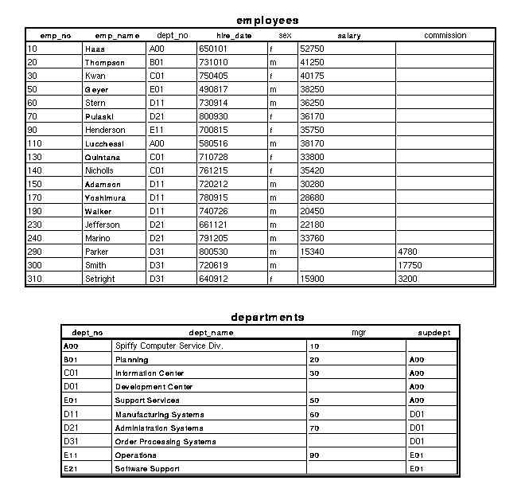
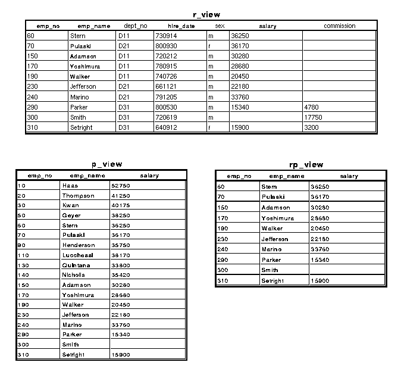
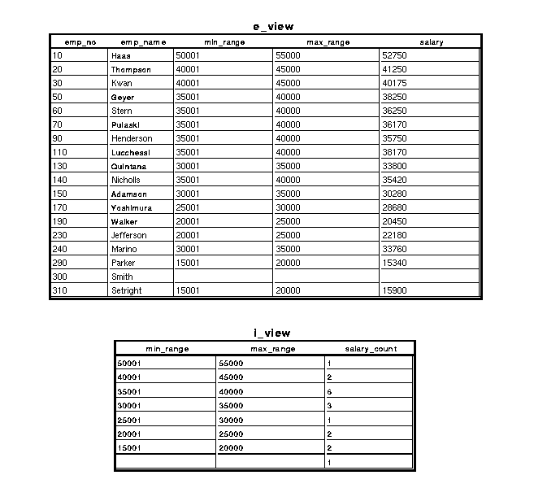
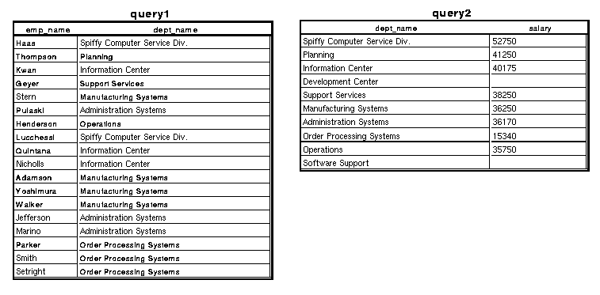
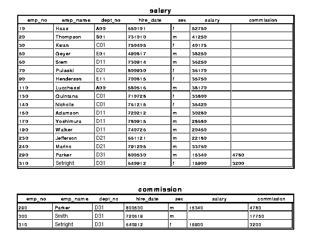
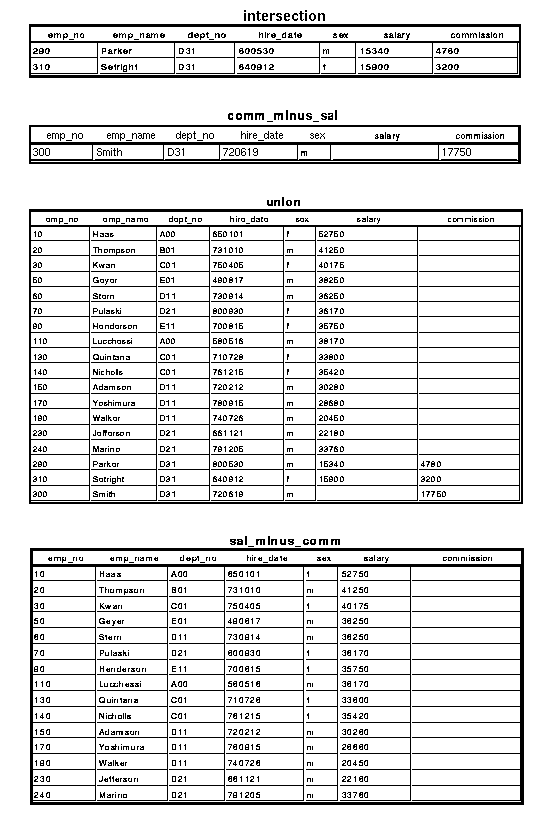

In order to establish the t context, it is necessary to perform a $load t.Just as the screen management system, the s context, provides the support for displaying tables on screens, the t context provides support for creating and manipulating tables in ways conforming to database queries. Like tables in the table display class (s-tables), t-tables are composed of column, or field, variables. However, t-tables are more complex. Each t-table is represented by an A+ context with the same name as the table, containing the column variables of the table as well as a set of variables and dependencies describing various characteristics of the table and its relationships to other tables; this set is described in the table "t-Created Variables, Dependencies Common to All Table Contexts". For example, the variable _T is a list of the names of the column variables as symbols, and appears in every t-table context. Programmers can define their own variables and dependencies in terms of this set, thereby integrating t-tables into their applications and synchronizing changes in data. The t-generated objects in the table contexts are called table variables and table dependencies. They, and column variables, are referred to here by their unqualified names unless it is necessary to do otherwise.
With regard to database maintenance and manipulation, t is the manipulation component, i.e., the computational engine that implements query languages. It can be helpful to think of the t functions in terms of relational operations, which are conceptually simple and have proven to be an effective, complete set for implementing database queries. Even though there is not an exact fit between t functions and relational operations, they are comparable. See "The Relational Set Operations: Union, Intersection, and Difference" for examples of defining relational operations in terms of t.
Every t-table is an A+ context; the name of the table is the name of the context. As the last sentence illustrates, t-tables will be referred to simply as tables where the context permits. The function t.open is the means of creating and initializing t-tables from mapped files, text files, and ordinary variables and dependencies. Tables created by t.open are called base tables. Other tables, called views or derived tables, are created from base tables and other views. In the process of creating a view, the view is called the target, and the table(s) from which it is created the source(s). A view of the table X, for example, can be created as the result of applying a selection function such as t.only to X, or the summarization function t.group (for which t.break is a synonym). At the time of creation the view has no columns; it is populated by sending it some or all of the columns of X with the function t.send. The selection functions can also operate on views in place, i.e., without creating a second view to hold the selection; they cannot be applied to base tables in place. The function t.define is used to append new fields to existing tables. The function t.link is the means for relating one table to another; it includes a variation of t.group, and is the most distinctive feature of t.Not all t-tables are valid s-tables. The definition of t.open gives the full range of possibilities for t-tables. See t.table for extracting the subset of a t-table that can be displayed on the screen.
Names of tables and table columns always appear as symbols in A+ expressions, but elsewhere in this chapter they often appear in ordinary font.Tables are contexts, and while it is common to refer to objects in contexts by their fully qualified names, this is not the case for table columns. Unqualified column names should always be used in the arguments of the t functions except for columns outside the table context; the table will be determined from context.
Column names cannot begin with an underbar (_).
A table column is an A+ array whose length is its item count. If all columns of a table have the same length, one can speak of the length of the table as the common length of its columns. Like s-tables, t-tables need not have columns whose lengths are all the same, although that is most generally useful. It is assumed in all examples in this chapter that all columns of a table have the same length. When that assumption is true, the length of the table is maintained in the table variable _N. Otherwise, _N is the number of items in the column named by 0#_T, where _T is the table variable holding a list of all column names.If c1, c2, ... , cn are columns in a table then the list (i#`c1;i#`c2;...;i#`cn) is called their ith row, and if these are all the columns, then the list is called the ith row of the table.
The domain of a table column consists of the shape of its items and its general type; two table columns are in the same domain if they are a valid left argument, right argument pair for the Catenate primitive. More generally, two sets of table columns c1, c2, ... , cn and d1, d2, ... , dn are said to be in the same domain if every pair ci and di are in the same domain.
See "Row and Column Selection", below, for more on the relationship between base tables and views.
It is generally assumed throughout this chapter, unless something is said to the contrary, that tables have distinct rows. This assumption is not restrictive in practice: when tables are constructed, intermediate results may have duplicate rows, but otherwise it is very rare for duplicate rows to be of use.
The tables and A+ expressions for creating the examples can be found online. The mapped files for these tables are created by the A+ script /usr/local/aplus-fsf-4.18/doc/tutorials/t.tutorial/files.+ and the t tables are loaded by the A+ script model.+ in the same directory. To create your own copies of the mapped files and experiment with variations of the t tables, make copies of these scripts and change their directory variables. There is also a script that recreates the examples in the text. See the README file in that directory for more information.Only the tables named employees and departments are actually used in this document (see the base tables figure). They are created using the t function t.open, as follows:
$load t
directoryû"/usr/local/aplus-fsf-4.18/doc/tutorials/t.tutorial/files/"
(`departments;directory) t.open (
`dept_no;"0àdept.dept_no";
`dept_name;"¢1àdept.dept_name";
`mgr;"0àdept.mgr";
`supdept;"0àdept.supdept")
(`employees;directory) t.open (
`emp_no;"0àemp.emp_no";
`emp_name;"¢1àemp.emp_name";
`dept_no;"0àemp.dept_no";
`hire_date;"0àemp.hire_date";
`sex;"0àemp.sex";
`salary;"0àemp.salary";
`commission;"0àemp.commission")
employees.emp_nameûÎØ¡employees.emp_name
The Base Tables:

Row and column selection in t is done using t.only and t.send. For example, the employees table in the figure can be restricted to departments D11, D21, and D31 as follows:`employees `r_view t.only 'dept_noÅ3 3Ò"D11D21D31"' `employees `r_view t.send ()Selection of the rows is done by t.only and is similar to the A+ primitive function called Replicate. The left argument specifies the source table on which the selection is made and the target, in which the selection is realized. The right argument is a character vector holding a boolean-valued expression that specifies the rows to be selected. The view can already exist or not; if it already exists then its current definition is closed (see t.close) and replaced with the new one.Once t.only is executed, the table r_view has been created but has no columns. To complete the row selection, send the columns of the source to the target. The right argument () to t.send indicates that all columns are to be sent. See the selection figure for the result of this selection.
As for column selection, columns emp_no, emp_name, and dept_no of the employees table can be selected as follows:
`employees `p_view t.only () `employees `p_view t.send `emp_no `emp_name `salaryThe right argument () to t.only indicates that all rows are selected, and the right argument to t.send specifies the columns to send to the selection table, p_view. See the figure.Row and column selection can be combined. For example, a view of the emp_no, emp_name, and salary columns for all employees in departments D11, D21, and D31 is:
`employees `rp_view t.only 'dept_noÅ3 3Ò"D11D21D31"' `employees `rp_view t.send `emp_no `emp_name `salaryThere is a utility function in t named t.in that allows a more English like specification of a set of values in a selection, in this case
"D11,D21,D31" in place of
3 3Ò"D11D21D31". See "Selectors" for more on this topic.There are several other points to be made about row selection. First of all, it is not necessary to do the row selection all at once. For example, after making the department selections above, department E01 can be added to the selection as follows:
`employees `rp_view t.also 'dept_noÅ1 3Ò"E01"'When both the source and target are specified in the left argument to t.also, the selection is evaluated on the source table. However, if only the target is specified in that left argument, the selection is evaluated on the complement of the target (those rows that are not currently selected), and the result is appended to the target. In the latter case, any columns named in the selection must have been sent to the target before the selection is made.For example, the selection using t.also above can be rephrased as:
`employees `rp_view t.send `dept_no `rp_view t.also 'dept_noÅ1 3Ò"E01"'Note that this formulation tends to be more efficient than the one above, which refers to all rows of the source table.Applications of t.also have the effect of ORing the selection specified in its right argument with any previous selections made with this function. If a subsequent selection is done with t.only, it will replace the existing one.
By default, selections ultimately refer to the entire source table of a view, or to the entire complement of a view in its source table. For example, if the following selection is now executed:
`employees `rp_view t.send `emp_no `rp_view t.also 'emp_noÅ60 90'then one more row will appear in rp_view, the one for the employee with employee number 90, because that employee's department is not one of D11, D21, D31, and E01. If, however, the view had been fixed before the employee number selection was made, as in:`rp_view t.fix 1then the employee number selection would have applied only to the rows in the view table at the time that t.fix is executed, and consequently, no new rows would appear. The logical effect of executing t.fix with a right argument of 1 is to And the selections made before its execution with those that follow, and a practical effect is to make subsequent selections more efficient by limiting their scope.
Every view table created by t.only has a table variable _V, which is a vector of row indices in the source table of the view that reflects any row selections done on the source; the ith item of any column sent to the view will be the _V[i]th item of the source column. The value of _V is kept current with all selections and reordering of the rows in the view.Row and Column Selection:When a column col is sent from a source table src to a target table tar, the target column is, in the default case, defined by the following dependency in the tar context:
col:_V#src.colActually, the dependency is somewhat more complicated, and more like:col:_index{_V;src.col;NA}where NA denotes the appropriate NA value to be used when indices in _V are out of range; see the definition of t.index, and the `na attribute in the definition of t.open. This default dependency definition can be modified when the source column is sent; see "Dependency Frames" and the definition of t.send.The dependencies provide mappings from source columns to view columns. There are also mapping provided by t in the other direction, from view columns to source columns. These are accomplished by putting callbacks on the view columns which make the appropriate updates to source columns whenever they are called.
Column selections are similarly maintained in the table variable _T.

The purpose of group fields is to partition, or categorize, or group the rows of a table by equal values in a selected column or equal sets of values in a set of columns, or by values within specified intervals in a column or set of columns. For example, consider the dept_no and sex columns in the employees table in the base table figure.The two columns on the left in the partitioning table show the distinct entries in the dept_no column and the row indices for the employees in each department. For instance, the employees in department D11 are in rows 4, 10, 11, and 12 of the employees table. Thus the second column represents the partitioning when the column dept_no is the group field.
The two columns on the right in this table represent the partitioning when the columns dept_no and sex are the set of group fields. When dept_no alone is the group field there are eight groups in the partition because there are eight department numbers. When dept_no and sex are the set of group fields there are sixteen groups, consisting of the females in each of the eight departments, and the males in each department.
Partitioning of the employees Table Based on One and Two Group Fields dept_no One Group Field: dept_no Two Group Fields: dept_no and sex dept_no row indices dept_no and female dept_no and male A00 0, 7 0 7 B01 1 1 C01 2, 8, 9 2, 8, 9 E01 3 3 D11 4, 10, 11, 12 4, 10, 11, 12 D21 5, 13, 14 5 13, 14 E11 6 6 D31 15, 16, 17 17 15, 16 The function t.group is used to establish views based on group fields. In the example of dept_no as a group field for the employees table, a view could be formed as follows:
`employees `bd_view t.group `dept_noAs with t.also, the effect of t.group is to create the view called bd_view, but the view must still be populated using t.send. If the salary column is sent from the employees table to bd_view, it is not unreasonable to expect that the items of the target column would be salaries grouped by department. Typically, however, it is not these groups that one wants, but the result of some function applied to the groups. For instance, one might want the largest value in each group, the smallest, or the average. A function applied to the groups is called a group function, or summarization function. For instance, to get the largest salary in each group, the group function would be specified as follows:`employees `bd_view t.send (`salary;Ó/)Different columns can be sent with different group functions. For instance, if the emp_no field is sent to bd_view and its items are grouped by departments, then its group function might simply collect all the employee numbers in each group. This group function would be specified as follows:`employees `bd_view t.send (`emp_no;<)For more on group functions, see "How Group Functions are Specified and How t Applies Them".
Exactly how are group fields maintained? Executing t.group establishes a mapping from the row indices of the source table to the row indices of the target table, which in this example is from the employees table to the bd_view table, and is:(<@1 (D employees.dept_no) OE employees.dept_no )/¡<É#employees.dept_no < 0 7 < 1 < 2 8 9 < 3 < 4 10 11 12 < 5 13 14 < 6 < 15 16 17The function D{x}:((xÉx)=É#x)/x is the usual one that produces the distinct items of the dept_no column. The function OE{x;y}:x½@1 1 0 y generalizes the outer product aÊ.=b to apply to items of matrices instead of items of vectors. The result of the above expression is a vector of enclosed index vectors that reflects the grouping defined by the group field; compare this result with the table.For example, when the salary column is sent to the bd_view table, the fifth element of the mapped column, bd_view.salary[4], is computed from elements 4, 10, 11, and 12 of the source column, and is Ó/employees.salary[4 10 11 12], or 36250. The group function Ó/ was specified when the salary column was sent to departments. Different functions can be specified for different columns.
This mapping is maintained by t in the table dependency bd_view._J. When the salary column is sent from employees to bd_view with the group function Ó/, the new column is a dependency on the source column whose definition is essentially:
bd_view.salary:>Ó/¡bd_view._J#¡<employees.salary(but see the use of _index in the definition of col in "How t Manages Row and Column Selection").There are two parts to this dependency:
- bd_view._J is a partition of the row indices of the employees table with one element for each row in the bd_view table. When a column is sent from employees to departments, say salary, that column is first partitioned according to this variable, essentially as:
partition_of_salaryûbd_view._J#¡<employees.salary
- The partitioned column is a vector of subcolumns, with no item of the column appearing in more than one subcolumn. The group function is applied to each of these subcolumns to produce the target column in the departments table:
Ó/¡partition_of_salary
So far in this chapter, items in group fields have been grouped by equality. An important variation of this practice, particularly for numeric group fields, is to group items according to intervals of minimum and maximum values, i.e., to group them in ranges. For example, in the employees table in the base table figure, it is generally more useful to group employees by salary ranges than by identical salaries. For instance, the question as to how many salaries fall within each $5000 increment can be answered as follows. First, make a view of the employees table with a few representative fields including salary, and in that view form two new columns representing the lower limit and upper limit of the salary interval for each salary. These new columns will calibrate the group field.Grouping By Intervals On the Salary Column Of e-view:`employees `e_view t.only () `employees `e_view t.send `emp_no `emp_name `salary `e_view t.define (`min_range; 'â1+5000«Äemployees.salaryß5000') `e_view t.define (`max_range; 'â5000«Óemployees.salaryß5000')Now form a second view based on salary as a group field with intervals of $5000:`e_view `i_view t.group (`salary;5000«É12)Finally, send salary to the second view with the A+ primitive # as its group function, and send both min_range and max_range with the default group function ("first item"):`e_view `i_view t.send (`min_range;; `max_range;; `salary_count;(`salary;#))Both views are shown in the grouping figure. The reason for creating the min_range and max_range columns in the e_view table and sending them to i_view should now be apparent: in i_view, they serve to calibrate the salary_count table. In a real application, they would most likely not appear in e_view.Furthermore, in a real application the last row of the i_view table, which is due to the missing salary for Smith, would be filtered out.

There are useful variations of the group fields called direct and indirect static group fields, which have these characteristics:
To illustrate the indirect static link, suppose that the group view above had been formed with t.group_i instead of t.group:
- The map from the source table to the target table can be computed once and stored. This is useful for large, relatively fixed files for which these computations are expensive.
- The map is represented as a triple of simple integers instead of a nested vector of integer vectors, which is better for large files and easy to save in mapped files for later use.
`employees `bd_view t.group_i `dept_noLet x be the mapping bd_view._J defined above for the t.group case. Then the mapping bd_view._J in the t.group_i case is simply a vector of counts of the items of the x, namely Ø#¡x:bd_view._J 2 1 3 0 1 4 3 3 1 0In addition, t.group_i generates a permutation vector named employees._H_bd_view that sorts the group field dept_no into nondecreasing order, and also a vector named bd_view._K of first occurrences of the unique elements of the group field in the sorted group field:employees._H_bd_view 0 7 1 2 8 9 4 10 11 12 5 13 14 15 16 17 3 6 bd_view._K 0 2 3 18 16 6 10 13 17 18Then for any n, the n-th item of the mapping x defined above can be obtained from these three vectors:employees._H_bd_view[bd_view._K[n]+Ébd_view._J[n]Consequently, the group mappings for t.group and t.group_i are functionally equivalent.Once these variables have been created, they can be saved in mapped files, and in such a way that they will be retrieved automatically by t when needed. Suppose all the columns of the employees table are kept in a directory named source, and nothing else is kept there. Save employees._H_bd_view in that same directory, and with the file name the same as the variable name:
'source/_H_bd_view.m'àemployees._H_bd_viewThe target table is a view and therefore its columns did not come directly from mapped files. So, choose a directory that will only hold the saved variables bd_view._J and bd_view._K, say target:'target/_J.m'àbd_view._J 'target/_K.m'àbd_view._KIn a later session, the two tables are opened as follows:(`employees;'source') t.open () (`bd_view;'target') t.open ()- yes, even the view is explicitly opened, in order to retrieve the saved table variables - and bd_view is made a view of employees:`employees `bd_view t.only ()Send the grouping fields:`employees `bd_view t.send (`dept_no;)The state is now the same as that after the original evaluation of t.group_i. For example, send the salary field to the view, as in the t.group example (note that this can be combined with sending the grouping fields):`employees `bd_view t.send (`salary;Ó/)In addition to the indirect static group, there is a direct static group denoted by t.group_d. The difference is that the permutation is not computed, i.e., in the above example, employees._H_bd_view. It is still needed, however, and must be supplied by the user, similarly to t.break_b. For example, after the following is executed:`employees `bd_view t.break_d `dept_nothe permutation vector must be defined before any fields are sent to the view.
The partitioning table illustrates grouping on multiple fields, in particular:`employees `view t.group `dept_no `sexAs that table indicates, rows of employees are grouped together based on equal rows of the column pair dept_no and sex. An interesting variant of grouping on multiple fields is provided by t.report. If the following is executed:`employees `view t.report `dept_no `sexthe result is as if an intermediate table were formed that grouped the employees table according to the first column named in the right argument, namely dept_no, and then view were formed from that intermediate table by further classifying the members of each department by sex, i.e. the second column named in the right argument. In fact, that intermediate table is actually formed. If more columns had been named in the right argument then this successive refinement method would have continued for every named column, in the order of the names in the list, and an intermediate table for every step except the last would be created.A special first column named view._ is automatically generated, providing row labels for the successive refinements. If the screen management system called s is present, then the following provides a display of a representative examples of t.report:
`employees `view t.send (`salary;Ó/) show t.table `view
Linking is the basic operation for relating the contents of two tables. In the simplest cases the two tables must have a common field, called the link field; more general cases with several link fields will come up later. That is, there is a column in one table with the same name as a column in the other, and these two columns are in the same domain (see "Table Row and Column Domains"). In most practical cases, the two columns have some matching items but are not identical. Linking is not a symmetric operation. One table is selected as the partition side of the link, largely because its link field has distinct items, and the other then becomes the replication side. The link field on the partition side is also called the index field, and the one on the replication side the grouping field, or group field.Sample Query Tables Created Via t.link:A link is a relationship between two tables, based on identical items in their common link field. The relationship is expressed in terms of a correspondence between the row indices of the partition side and the row indices of the link side. The correspondence is illustrated in the next table for the two tables in the base table figure and the common field dept_no. For example, department number C01 appears in row 2 of the departments table and rows 2, 8, and 9 of the employees table. The asymmetry of the link is a reflection of the asymmetry of this correspondence, which is one to many in one direction (and many to one in the other).
Once a link is established, columns can be sent, or mapped, from either side of the link to the other based on the correspondence between the row indices of the two tables. For example, suppose the dept_name column is mapped from the departments table to the employees table to form a new dept_name column. Then item 2 of the dept_name column in departments, "Information Center", will appear in rows 2, 8, and 9 of the new dept_name column. Or, if the salary column in the employees table is mapped to the departments table to form a new salary column there, then the salaries of the employees Pulaski, Jefferson, and Marino (i.e., rows 5, 13, and 14 of the employees table) will all appear in row 6 of the new salary column.
Note that the mapping from the replication side of the link to the partition side is essentially the same as the one from a source table to a view created by t.group, up to a permutation of target table.
Row Index Correspondence of departments and employees based on dept_no Row Index
in departmentsdept_no items Row Index
in employees0 A00 0, 7 1 B01 1 2 C01 2, 8, 9 3 D01 5 D11 4, 10, 11, 12 6 D21 5, 13, 14 7 D31 15, 16, 17 4 E01 3 8 E11 6 9 E21 Example
The most common situation in linking two tables occurs when the items of one of the link fields are distinct, while those of the other may or may not be distinct. In this case the table whose link field is known to have distinct items should be selected as the partition side of the link, and the other becomes the replication side. As an example, consider once again the two tables in the base table figure.
These tables have a common field called dept_no. If they are linked on that field (as in the table above), tables corresponding to the results of the following queries (among many) can then be built:
Since department numbers uniquely identify departments, the departments table is chosen to be the partition side of the link. The link is established as follows:
- Query 1: what are the department names for all employees?
- Query 2: what is the maximum salary in each department?
`departments `employees t.link `dept_noThe left argument of t.link is always a two-element symbolic vector whose first element identifies the partition side of the link, and whose second element identifies the replication side. The right argument is (a list of) the link field(s). Once the link is established, any number of columns can be sent from one table to the other in order to answer a variety of queries. To answer the first query, send the dept_name column from the departments table to the employees table, as follows:`departments `employees t.send `dept_nameThe answer is then contained in the columns emp_name and dept_name of the augmented employees table. These columns cannot be displayed separately because the column emp_name already appears in the display of employees (see the base table figure) and the screen management system does not allow an object to appear on the screen more than once. Therefore, for display purposes, create and populate a new table, query1, as follows:`employees `query1 t.only () `employees `query1 t.send `emp_name `dept_nameSee the query tables figure for the display of this table.As for the second query, send the salary field in the employees table to the departments table, as follows:
`employees `departments t.send (`salary;Ó/)(the group function Ó/ implements the "maximum salary" part of the query). Create a query table as follows (see the query tables figure):`departments `query2 t.only () `departments `query2 t.send `dept_name `salary

This mapping is maintained by t in the table dependency employees._I_departments. When the column dept_name is sent from departments to employees, the new column is a dependency on the source column whose definition is essentially:
A second mapping in the other direction is also established, i.e., from the replication side to the partition side, which is similar to the mapping associated with group fields (see "How t Manages Group Fields"). In this example the mapping is from the employees table to the departments table, and is:
For example, when the salary column is sent to the departments table, the sixth element of the mapped column, departments.salary[5], is computed from elements 4, 10, 11, and 12 of the source column, and is Ó/employees.salary[4 10 11 12], or 36250. The group function Ó/ was specified when the salary column was sent to departments. Different functions can be specified for different columns.
This mapping is maintained by t in the table dependency departments._J_employees. When the column salary is sent from employees to departments with the group function Ó/, the new column is a dependency on the source column whose definition is essentially:
It is worth noting that the name of each map from one partner in a link to the other contains the name of the partner. This suggests that a table can participate in more than one link, since there would be no name conflicts in the table dependencies by which the multiple links would be managed. This is in fact true. Moreover, a table participating in several links can serve as the partition side in some and the replication side in others.
There is one difference between static links and static groups. After the link is established and saved, and after the two linked tables are opened in a later A+ session, link pointers must be manually set. For example, if the static link had been originally established as:
Suppose that instead of the employees table, there are two other base tables, a salary table for all employees who receive a salary, and a commission table for all employees who receive a commission. For the purpose of illustration, the salary table can be built from the employees table as follows:
Link these tables on the full set of columns; since the rows of either table are distinct, either table can be used on the partition side of the link:
The other set difference, "salary minus commission", which is the set of rows of salary that are not in commission, can be obtained from the partition map salary._J_commission; it consists of all rows j of salary for which the jth partition is empty, i.e.,
For example, it is possible to permit selections on date fields of the form '1/1/93 to 10/1/93' if there is an application-supplied selector function that can parse this expression and apply it to table columns. A selector function must satisfy the following conditions:
A selector can also be specified by a pair (fcn;static_data), as in
Several column selections can be made at once, as in:
A column in a target table that is the image of one in a source table will use the selector of its source column if one of its own has not been specified.
Selectors are specified in the right arguments of t.open and t.define.
When a column is sent from one table to another, by default the target column is defined to be a dependency on the source column, basically of the following form, where f is defined by t:
Using the partitioned column partition_of_salary defined in
"How t Manages Group Fields", the ways t applies group functions are:
Note that the script dio.+ must be loaded before this function is
used.
When t.send is subsequently executed to populate the view
`v with columns, its left argument need not equal
w, even though w as the right argument of
t.send is by far the most useful case. Only columns of those tables
specified in the left argument to t.send will appear in
`v, and in the same order (top to bottom) as table names appear in
that left argument (left to right).
The result is a list of names of all t-tables whose table variables _T are modified by this evaluation.
Note that if the right argument is the Null and the table is bound to a display class when closed, it is unbound.
The result of the function is the name of the opened table.
The right argument is currently not used. The result equals the left argument when source tables are specified, and otherwise is the same as the result would have been had all source tables been specified.
This function is useful when the columns in source tables are large and no longer of direct interest once links and views have been formed. These columns can be detached from their targets, leaving the current values of the targets intact, and then expunged.
The first element of the left argument w is a source context, and the second element is a target context. The right argument s holds the name of a slotfiller or nested slotfiller in the source context, i.e., the slotfiller is w[0]%s.
In the case of a slotfiller, this function creates a dependency in the target context for every symbolic index y, whose name is the name held by y, and whose definition is yØw[0]%s. An assignment callback is defined on this dependency so that whenever the dependency is assigned a value, the slotfiller element yØw[0]%s is also assigned this value. In this way data organized in a slotfiller is dispersed to global variables, where it can serve as columns in t-tables or screen objects.
The result in the slotfiller case is w[1].
In the nested slotfiller case, contexts whose names are prefixed by the name in w[1] are created for every level of the slotfiller, dependencies are created in these contexts, and assignment callbacks are defined, all analogous to the slotfiller case above. The result in this case is a list of names, as symbols, of the created contexts corresponding to the ordinary slotfillers at the bottom of the nested slotfiller.
The result is the number of selected rows.
The result is the number of rows in the sorted table.
This function can be used to form selections in the right argument of selection functions such as t.only.
A+ applications can use t.index wherever _index would otherwise be used but defaulting to this definition of NA values makes sense.
If the right argument is a two-element nested vector, then the symbols in the first item identify the link fields in the table named in the first element of the left argument, and the symbols in the second element identify the corresponding link fields in the other table. A Null right argument breaks any existing links between the two tables named in the left argument.
See "Linking Tables" for details.
Let table l be the partition side and table r the replication side. Unlike t.link, this function requires that a sort vector for the link field(s) on the replication side be known, and that sort vector is the user-defined table variable r._H_l. Specifically, this vector must have the following meaning. Say the link field on the partition side is p and on the replication side is r. Then r._H_l must be a permutation vector so that the items of r._H_l#r%p are in nondecreasing order (see "Sorted Arguments to the b-Context Functions", for the definition of nondecreasing order). The t-defined table dependency l._G_r is defined by the expression:
The meaning of the left argument is:
Note that as a special case, when a value has only one element, that element does not have to be enclosed.
A one-element left argument holds the name of an existing view. If the right argument is an integer, the effect is to restrict the view to a random sample of n rows, and the result equals n. If the right argument is the Null, the effect is permute the rows of the view, and the result equals the number of rows in the view.
The symbols in the left argument are the names of tables, either base or view. If the left argument has two elements, then the first one denotes the source table of the selection and the second one the target table; if it has one element, it denotes the target table. When the left argument has two elements and the target table does not exist, it is created; when the argument has one element, it is assumed to be an existing table.
The target table cannot be a base table, i.e., it cannot be one created by t.open. A view table can serve as either the source and target table.
In the case of a two-element left argument, the right argument defines a selection of the rows in the source table that will make up the target table. If the right argument is an integer vector or scalar it is assumed to hold the indices of those rows in the source table. If the right argument is a character vector or scalar it is assumed to hold an A+ integer-valued expression; calling the value of this expression v, the target table will consist of the source table rows with row indices v/É#v.
In the case of a one-element left argument, the right argument defines a selection of rows in the existing target table. If the right argument is an integer vector or scalar, it is assumed to hold the indices of rows in the source table that are currently in the target table, while if the right argument is a character vector or scalar it defines a selection of rows from the current target table.
When the right argument is the Null, the resulting view contains all rows of the source, no matter whether the left argument has one or two elements.
When the right argument is an integer vector or scalar it is most likely the result of an A+ expression, and when it is a character vector or scalar it contains an A+ expression. The difference between the two forms of right argument is due to the way t evaluates a character right argument. For example, suppose a selection is to choose all rows for which the value of the column named col is greater than 10. Then a character right argument should be 'col>10' or an equivalent statement, and should not refer directly to the source table. See the utility function t.in for another example.
Note that t.only simply defines view tables; it does not populate
them with columns. For that purpose, see
t.send.
The target table cannot be a base table, i.e., it cannot be one created by t.open. A view table can serve as either the source and target table.
If the left argument w has one element and the right argument x is a nonempty symbol vector or symbol scalar, the effect of this function is to sort the table named by w, as follows. The A+ primitive Grade Up is applied to the column named by the last element in x, and the resulting permutation vector is applied to all columns of the table. Grade Up is then applied to the column named by the next to last element in x, and the resulting permutation vector is applied to all columns of the table. This process continues until Grade Up has been applied to all columns named in x, in their right to left order of appearance.
If instead the right argument x is an association list, then the symbol in each symbol, value pair is the name of a column, and the value is either 0 or 1. The sorting process described above is modified so that Grade Up is applied to a column only when its associated value is 1, and otherwise Grade Down is applied.
When the left argument has two elements, the first element names a source table and the second element a view of that source. The effect of this function is apply the sorting process to the source table to obtain a permutation vector, although that table is left unchanged; the permutation vector is applied to the rows of the view table instead.
If the right argument is the Null then a table is returned to its unsorted order.
As with other t functions, the view created by t.report must be populated with columns from the source table, using t.send. In this case, however, t contributes a column of row headings indicating the successive grouping. This column is named _ and is the first name in _T.
The symbols in the left argument are the names of tables. The first element names an existing base or view table, called the source table, and the second element names a view table to be created by this function, called the target table. The symbols in the right argument, including the case of the symbolic indices in a slotfiller, are the names of columns called group fields that appear in the source table; all fields are group fields if the right argument is the Null. The effect of this function is to establish a onesided link from the source table to the target table on the specified group fields, with the source table acting as the partition side of the link, which means that mappings are established between the two tables that govern the way columns are sent from one to the other. See "Group Fields and Group Functions" for details. In the case of a slotfiller right argument, every value `aØf is an integer vector specifying the group-by-interval values for the field a.
t.break is a synonym for t.group.
The symbols in the left argument are the names of tables, either base or view. If the left argument has two elements, then the first one denotes the source table of the selection and the second one the target table; if it has one element, it denotes the target table. When the left argument has two elements and the target table does not exist, it is created; when the argument has one element, it is assumed to be an existing table.
The target table cannot be a base table, i.e., it cannot be one created by t.open. A view table can serve as either the source and target table.
In the case of a two-element left argument, the right argument defines a selection of the rows in the source table that will be appended to the target table. If the right argument is an integer vector or scalar, it is assumed to hold the indices of those rows in the source table. If the right argument is a character vector or scalar, it is assumed to hold an A+ integer-valued expression; calling the value of this expression v, the source table rows to be appended to the target table are those in v/É#v not already in the target table.
In the case of a one-element left argument, the right argument defines a selection of rows in the complement of the current target table, i.e., rows in the source table that are not in the target table. If the right argument is an integer vector or scalar, it is assumed to hold the indices of rows in the source table that are currently in the complement of target table, whereas if the right argument is a character vector or scalar, it defines a selection of rows in the complement of the current target table. The rows selected from the complement are appended to the current target table.
In the case of a two-element left argument, any unqualified table column names in the right argument refer to the source table, whereas for a one-element left argument, they refer to the target table. In the latter case, the columns so named must have already been sent to the target table.
When the right argument is the Null, the resulting view contains all rows of the source, no matter whether the left argument has one or two elements.
When the right argument is an integer vector or scalar, it is most likely the result of an A+ expression, and when it is a character vector or scalar it contains an A+ expression. The difference between the two forms of right arguments are due to the way t evaluates a character right argument. For example, suppose a selection is to choose all rows for which the value of the column named col is greater than 10. Then a character right argument should be 'col>10' or an equivalent statement, and should not refer directly to the source table. See t.in for another example.
Note that t.also simply defines view tables; it does not populate them with columns. For that purpose, see t.send.
How t Manages Table Links
Exactly how are table links accomplished? Executing t.link establishes two mappings between the two sides of the link, represented in the above table as correspondences between the row indices in column 1 and the row indices in column 3. One is a mapping from the rows of the departments table to the rows of the employees table, and in general from the partition side to the replication side, which is:
departments.dept_noÉemployees.dept_no
0 1 2 4 5 6 8 0 2 2 5 5 5 6 6 7 7 7
E.g., where the dept_name column is sent to the employees table, item employees.dept_name[6] in the mapped column equals item departments.dept_name[8] in the source.employees.dept_no:{
employees._I_departments#departments.dept_no}
(but see the use of _index in the definition of col in "How t Manages Row and Column Selection"). (<@1 departments.dept_no OE employees.dept_no
)/¡<É#employees.dept_no
< 0 7
< 1
< 2 8 9
<
< 3
< 4 10 11 12
< 5 13 14
< 15 16 17
< 6
<
The function OE is defined in "How t Manages Group Fields". Compare this result with the correspondence table, and the group field mapping in "How t Manages Group Fields".departments.salary:{
>Ó/¡departments._J_employees#¡<employees.salary}
(but see the use of _index in the definition of col in "How t Manages Row and Column Selection"). Multiple Group Fields
How can effective links be done if no column can be guaranteed to have distinct items? The answer is that link fields are not restricted to a single column; any set of columns will do, as long as columns with these names appear in both tables, and the two sets of columns are in the same domain (see "Table Row and Column Domains"). The partition side of the link is then the table in which the rows have distinct sets of entries in the set of link fields. The mapping from the partition side of the link to the replication side resembles the b context function b.p more than dyadic É, but is more general, and the mapping in the other direction is comparably general. Several examples of linking on more than one column appear in the "The Relational Set Operations: Union, Intersection, and Difference".
Duplicate Items in a Link Field on the Partition Side
Even if the items of a link field or the rows of link fields are not distinct on the partition side of a link, the link can still be made; how effective it will be depends on the application. The effect of partition side duplicates can be seen from the mappings between the two sides of the link. When there is one link field, the mapping from the partition side to the replication side is of the form:
part.link_field É repl.link_field
If the ith and jth items of the column partition.link_field are identical and i is less than j, then j does not appear in this mapping, i.e., j is not in the result of the above expression. Consequently the jth item of any column sent to the replication side of the link does not appear in that table. As for the mapping in the other direction, which in its simplest form is
(<@1 part.link_field Ê.= repl.link_field
)/¡<É#repl.link_field ,
the ith and jth elements created by this mapping are identical, and so the ith and jth items of any column sent to the partition side are identical.
Static Links
Analogous to t.group, there is an indirect static link function t.link_i and a direct static link function t.link_d. They produce variations of the map from the replication side to the partition side which are the same as the variations produced by t.group_i and t.group_d. In particular, t.link_d does not produce the required permutation vector on the replication side; this vector must be defined by the user before any columns are sent across the link.
`departments `employees t.link_i `dept_no
then the following establishes the link pointers in a later session:
employees._L[,]û`departments
departments.!R[,]û`employees
The Relational Set Operations: Union, Intersection, and Difference
The relational set operations provide examples of linking across multiple fields.
They apply to pairs of tables with the same number of columns, where for every column index i, the i-th columns of the two tables are in the same domain (see "Table Row and Column Domains"). In other words, it is possible to link the two tables across the full set of columns. To reiterate the point made earlier in the chapter, it is assumed that the tables have distinct rows (which is one of the criteria in the definition of relational tables).
Tables For the Relational Set Operation Examples:

`employees `salary t.only 'salary¨`intØt.NA'
`employees `salary t.send ()
(Note that there is now a salary table and a salary column.) There is one employee who receives no salary. The missing salary information for that employee is represented in the salary column by an NA value. That value was chosen to be the default numeric NA value, `intØt.NA, when the mapped files for the base tables were built. Consequently the selection expression in the right argument of t.only above selects all employees who receive a salary. The resulting salary table will the same as the employees table, except that the row with emp_no equal to 300 is missing (see the base tables figure, and the operations figure). The commission table is formed in the same way, and contains the last three rows of the employees table.
`employees `commission t.only 'commission¨`intØt.NA'
`employees `commission t.send ()
See the operations figure. `salary `commission t.link salary._T
Intersection
If a row of the commission table occurs in the salary table, then the corresponding element of the mapping
Examples of The Set Operations:
commission._I_salary
must be a valid row index of the salary table, and therefore not equal to the t-created variable salary._N, whose value is the number of rows in salary. By definition, the set of rows of the commission table that also appear in the salary table is the intersection of the two tables, and therefore the intersection table can be defined as:
t.only{`commission `intersection;
'commission._I_salary¨salary._N'}
`commission `intersection t.send ()

Set Difference
The set difference "commission minus salary" is the set of rows of the commission table that are not in the salary table, i.e., the complement of the intersection relative to commission. The difference can be formed simply by changing ¨ to = in the right argument of t.only above, or by using the same right argument in the complementary t function called t.not:
t.not{`commission `comm_minus_sal;
'commission._I_salary¨salary._N'}
`commission `comm_minus_sal t.send ()
See the examples figure. t.only{`salary `sal_minus_comm;
'~>#¡salary._J_commission'}
`salary `sal_minus_comm t.send ()
See the examples figure.
Union
The union of the salary and commission tables is the catenation of salary and the set difference table comm_minus_sal formed above, rows on rows:
`salary `comm_minus_sal `union t.cat ()
`salary `comm_minus_sal `union t.send ()
See the examples figure. The resulting table, named union, is the same as employees, except that the row for emp_no equal to 300 is in a different position. To make union the same as employees, sort it on the emp_no column:
`union t.sort `emp_no
Outer Union
The set operations are too restrictive to be generally useful because they only apply to pairs of tables that can be linked on their entire set of columns, a situation that does not arise naturally in applications very often. For example, the salary and commission tables in the previous example would most likely not occur in a real application; instead, the salary table would not have the commission column and the commission table would not have the salary column. The outer union is the relational operation that produces the employees table from the more realistic salary and commission tables, which are defined below as salary1 and commission1:
`employees `salary1 t.only 'salary¨`intØt.NA'
`employees `salary1 t.send (
employees._T¨`commission)/employees._T
`employees `commission1 t.only (
'commission¨`intØt.NA')
`employees `commission1 t.send (
employees._T¨`salary)/employees._T
This example is reduced to the previous one - and in general outer union is reduced to union - by constructing the salary and commission tables from salary1 and commission1. To do that, link salary1 and commission1 on all columns except salary and commission:
`salary1 `commission1 t.link (
`salary1._T¨`salary)/salary1._T
and send each one the missing column from the other:
`salary1 `commission1 t.send `salary
`commission1 `salary1 t.send (`commission;)
The function to be applied to partitions when generating the commission column in salary1 is "first element", as indicated by the right argument to t.send in the last expression (see "How Group Functions are Specified and How t Applies Them"). Since each partition happens to consist of a single element in this case (the collections of link fields in the two tables are identical), "first element" simply selects that element. The resulting salary1 and commission1 tables are identical to salary and commission.
Definitions of t-Context Functions
Selectors
In every example above of t.only and t.also, the right argument defining the selection, when not the Null, is a character vector containing a valid A+ expression. One example in "Row and Column Selection", suggests the use of t.in to permit special syntax, namely a right argument of the form "a,b,c" in place of the typical right argument to Member of (Å) of the form 3 1Ò"abc". It is possible to extend this technique with application-specific functions that play the same role as t.in. It is also possible to permit more English like selections on specific columns by connecting application-supplied selection evaluation functions to the t selection functions. These selection evaluation functions are called selectors.
For instance, if date ranges are given as '1/1/93 to 10/1/93', the selector function might be:
selector{s;d;i;p;c;v}
(the index argument i holds the selection criteria, such as '1/1/93 to 10/1/93', the context argument c holds the table name, the variable argument v holds the column name, and the data argument d holds the value of the column variable); date_selection{s;d;i;p;c;v}:{
iû' ',i;
bû' '=i;
(f;t)ûâ¡0 2#(Úb)Úi;
(d¦f)^(f¤t)
}
A selector function can be connected to the column of a table in one of two ways. It may be specified when a table is opened with t.open, or the t.selector attribute is specified for the column with the selector function as its value, as in:
`prices.date_col _set (`t.selector;date_selection)
where prices is the table containing date_col. Once connected, whenever a selection of the following form is made on the date_col column of the table named prices:
(`date_col;'1/1/93 to 10/1/93')
the selector function is called. This type of selection can be made with any of the t selection functions, t.only, t.also, and t.not. `prices.date_col _set (`t.selector;
(date_selection;date_style))
where the data has the same significance as in the right argument of _scb. (`date_col;'1/1/93 to 10/1/93';
`time_col;'9:00 A.M. to 4:30 P.M.')
Each of the two selector functions will create a boolean vector. The two vectors can be combined into a single selection result in one of two ways, either by ORing or ANDing them together (although in this particular example only AND seems to make sense). The function to be used, © or ^, is the contents of the t-variable t.CONNECT. Dependency Frames
A dependency frame is a character vector whose contents are an A+ expression preceded by a colon.
target.col:f{source.col}
A dependency frame is the means of modifying this definition (see t.send). In this example, wherever the column name col appears in the dependency frame, it is replaced by f{source.col}, and the resulting expression becomes the definition of the dependency target.col. For example, if the dependency frame is ":÷col", the target column dependency will be:
target.col:÷f{source.col}
Dependencies are specified in the right argument of t.send.
How Group Functions are Specified
and How t Applies Them
There are four ways that t applies group functions to a partitioned column, and the method
chosen in most cases depends on how the group function is denoted in the right argument to
t.send. There are various ways to attach a group function to a
column, the simplest being as a column-function pair such as
(salary;f); see the definition of
t.send for the others. No matter how the
attachment is done, the ways in which group functions themselves are denoted are always
the same.
Similar definitions apply to group functions for linked tables.
partition_of_salary
fe{v}:if (0=#v) _N else 0#v
which is formally applied in the standard way (see 3) below):
>fe¡partition_of_salary
However, t maintains the t-created variable bd_view._K that is
defined to be the vector of first items of the partition subcolumns:
bd_view._Kû>fe¡ bd_view._J
and consequently the new salary column in the departments table is:
bd_view._K#employees.salary
>f¡partition_of_salary
f¡partition_of_salary
Business Days t.calendar{s}
Argument and Result
The argument s is a character vector, and the result is an integer vector.
Definition
The argument s specifies the beginning date, ending date of a time series in the form:
'begin-date ý end-date'
where both beginning date and ending date are of the form mm/dd/yyyy. The result is an integer vector of all business days between beginning date and ending date. Each integer in the result is of the form
0 100 100 Âyear,month,day
where year is a four-digit integer, as in 1993, and
month and day are at most two-digit
integers.Calendar Indices t.series{w;x}
Arguments and Result
The left argument w is a symbol scalar holding the name of a global variable, the right argument x is a character vector, and the result is an integer vector.
Definition
It is assumed that the variable named in the left argument has had its `t.calendar attribute set, either indirectly with t.open or directly with _set. If so, this function produces indices into the value of that attribute, as follows (where calendar is w _get `t.calendar):
w t.series 'begin_date ý end_date'
ã for begin_date to end_date
w t.series ' ý end_date'
ã for 0 to end_date
w t.series 'begin_date ý '
ã for begin_date to (#calendar)-1
w t.series ' ý '
ã for É#calendar
The extra spaces in the right arguments are only for readability. Both begin_date and end_date are in the same format as the right argument to t.calendar, basically dd/mm/yyyy.Catenation t.cat{w;}
Argument and Result
The argument w is a symbol vector which must have at least three elements to be meaningful. The result equals w.
Definition
Suppose that w
is `s0 `s1 ... `sn `v. The effect of this
function is to initialize the view `v as the catenation of the tables
`s0 through `sn. Every element
`si is the name of an existing table, either a base table or a view.
The names of the columns in any `si must be the same as in any other
`sj. In addition, any pair of columns from
`si and `sj with the same name must be in the
same domain (see "Table Row and Column Domains").
Example
See the set union example in "The Relational Set Operations: Union, Intersection, and Difference".
Close Columns of a Table t.close{w;f}
Arguments and Result
The left argument w is a symbol scalar, while the right argument f and the result are symbol vectors. The right argument f can also be the Null.
Definition
The left argument w is the name of a t-table. If the right argument f is nonempty, then its elements are the names of columns of the t-table w. In this case the following is done:
If f is the Null then all columns of the table are treated in this manner. In addition, all table variables are removed, and in the case of a view, the table context itself is removed.Complement t.not{w;e}
Arguments and Result
The left argument w is either a two-element symbol vector, a one-element symbol vector, or a symbol scalar. The right argument e is either a character or integral vector or scalar, or the Null. The result is an integer scalar.
Definition
This function is the complement of t.only; it behaves exactly like t.only, except that it selects those rows that would not be selected if t.only were executed with the same arguments. If both the source and target are named in the left argument, then complement refers to the source table, while if only the target is named, complement refers to current view. In particular, if the right argument is the Null and both the source and target are named in the left argument, the resulting view has no rows, while if only the target is named, the resulting view has all rows in the source that are not in the current view.
Example
See the example in "Set Difference", as well as the example under t.only for a numeric right argument. Also:
tab.aûÉ100
`tab t.open `a
`tab `view t.only 'a<90'
90
`tab `view t.send `a
`view t.only 'a<40'
40
`view t.not 'a<10' ã The complement in the view.
30
`tab `view t.not 'a<10' ã The complement in the source.
90
`view t.not () ã The complement of the current view in the source.
10
`tab `view t.not () ã The empty view.
0
Create and Initialize a Base Table t.open{w;x}
Arguments and Result
The left argument w is either a symbol scalar, a character vector, a two-element nested vector consisting of a symbol scalar and a character vector in either order, or the Null. The right argument x is a symbol vector, an association list, a nested association list, a slotfiller, or a nested slotfiller. The result is a symbol scalar.
Definition
This function creates and initializes t-tables. The meaning of the left argument is:
Examples
The meaning of the right argument is:
Note that once an attribute is given a value in t.open, that value can be retrieved with _get. Attributes can also be given values directly with _set, as well as with t.open.
meaning that the column is a mapped file in the usual sense if n is 0, 1, or 2, or
meaning that the column is formed by using the rules described for
'nàfilename0' in the previous case, then the expression
column[,]ûnàfilename1 is evaluated, using the same rules for
'nàfilename1', and so on, until all files through
filenamek are appended to the column in this way.
meaning that the column is a dependency defined
by expression.
meaning that the column is an itemwise
dependency, with index i, defined by
expression.
meaning that the column is a variable whose
value is the value of expression.
t.load is a synonym for t.open.
`x t.open `y `z
`x t.open ()
`x t.open (`y;'âÉ100')
Note that when a column with an unqualified name is defined, the variable is created in the
context of the table (x in this case).
`x t.open (`y;'âÉ100';`z;':w.z*2')
or
`x t.open (`y`z;('âÉ100';':w.z*2'))
`x t.open (`y;(`;'âÉ100';`na;¢1234)
or
`x t.open (`y;(` `na;('âÉ100';¢1234)))
`x t.open (`y;(`;'âÉ100';`fill;'*'))
or
`x t.open (`y;(` `fill;('âÉ100';'*')))
`x t.open (`z;'[i]:w.z[i]*2')
(`x;'/usr/local/lib/') t.open (`z;'0àdata')
$cx x
() t.open (`z;'1à/usr/local/lib/data')
'' t.open (`z;'2àdata')
(`x;'/usr/local/lib/') t.open (`z;'¢1àdata')
(`x;'/usr/local/lib/') t.open (`z;'¢2àdata')
(`x;'/usr/local/lib/') t.open (`data;¢2)
(`x;'/usr/local/lib/') t.open (`z;'0àdata,data2')
Define a Column t.define{w;x}
Arguments and Result
The left argument w is either a symbol scalar, a character vector, a two-element nested vector consisting of a symbol scalar and a character vector in either order, or the Null. The right argument x is a symbol vector, an association list, a nested association list, a slotfiller, or a nested slotfiller. The result is a symbol scalar.
Definition
This function is like t.open except that only one column can be created; if the table already exists, this column is appended to it, and otherwise the table is created with this column as its only column. The left argument w is the same as t.open. The right argument x is also the same as t.open, except that it specifies just one column. The result is a symbol scalar holding the fully qualified name of the defined column.
Example
See "Grouping by Intervals".
Detach a Column from its Sources t.detach{w;x}
Arguments and Result
The left argument w is a nonempty symbol vector. The right argument x is any array.
Definition
The left argument w holds a list of table names. The table named in the last element of w is where the execution of this function has effect, and is called the target table in this definition. Any table named as one of the other elements of w is called a source table in this definition. The target table was either created from the source table(s) by a selection function such as t.only, or is the partition side of a link to the source table. If z is any column in the target table that is defined by t as a dependency on a column in one of the source tables, then the effect of this function is to make z an ordinary variable with its value equal to the current value of the dependency.
Direct Static Link t.link_d{w;f}
Arguments and Result
The left argument w is a two-element symbol vector and the right argument f is a symbol vector, a two-element nested vector whose items are symbol vectors of the same length, or the Null.
Definition
The definition is analogous to that of t.link, and the differences are discussed in "Static Grouping" and "Static Links".
Example
See "Static Grouping" and "Static Links".
Direct Static Summary t.group_d{w;f}
Arguments and Result
The left argument w is a two-element symbol vector, and the right argument is a symbol vector or scalar, or the Null.
Definition
The definition is analogous to that of t.group, and the differences are discussed in "Static Grouping".
Example
See "Static Grouping".
Disperse t.disperse{w;s}
Arguments and Result
The left argument w is a two-element symbol vector, and the right argument s is a symbol scalar or one-element symbol vector. The result is a symbol scalar or symbol vector.
Definition
This function is a utility function in t. It is t-like in its function, but not directly related to t-tables.
Example
x.bû10«x.aûÉ3
x.slotû(`k`m;(x.a;x.b))
`x `y t.disperse `slot
_def `y.m
m:`mØx.slot
y.mû-y.m
`mØx.slot
0 ¢10 ¢20
Dynamic Derived Table t.always{w;e}
Arguments and Result
The left argument w is either a a one- or two-element symbol vector, or a symbol scalar. The right argument e is a character vector or scalar, or the Null. The result is an integer scalar.
Definition
If the right argument e is a nonempty character vector or character scalar, this function has the same effect as t.only, except that the selection defined by e remains active. That is, if any column in the source table whose name appears in e changes, the selection is recalculated. If the right argument is the Null then this function has the same effect as t.only, and in addition any active connection is broken.
Dynamic Sorted Derived Table t.sorted{w;x}
Arguments and Result
The left argument w is either a one- or two-element symbol vector, or a symbol scalar, or the Null. The right argument is either a nonempty symbol vector or an association list. The result is an integer scalar.
Definition
This function is to t.sort as t.always is to t.only: a table is sorted just as it is by t.sort, but it is also sorted again whenever one of the columns named in x changes.
Find t.in{a;b}
Arguments and Result
The left argument a is a character matrix and the right argument b is a character vector or scalar. The result is a boolean vector of size #a.
Definition
This function is a utility function in t. The right argument holds a list of character strings, each of length 1#Òa, separated by commas. If a matrix c is formed with these character strings as rows, then t.in{a;b} equals aÅc.
Example
The selection 'dept_noÅ3 3Ò"D11D21D31"' in "Row
and Column Selection" can be phrased in the more English like
'dept_no in "D11,D21,D31"'. See
"Selectors" for more on English like selections.
Fix a View t.fix{d;b}
Arguments and Result
The left argument d is a one-element symbol vector or a symbol scalar. The right argument b is a one-element integral vector or an integral scalar. The result is an integer scalar.
Definition
The table named by the left argument d should be a view in which row selections are done, e.g., with t.also. When t.fix{d;1} is executed the current view d is fixed; any further selections done in the view2 will refer to no rows in the source of d other than those present at the time t.fix{d;1} was executed. A subsequent execution of t.fix{d;0} releases the fixed view, i.e., returns to the default setting.
Example
src.aûÉ100
`src t.only 'a<90'
90 ã The number of rows in view
`view t.fix 1
`src `view t.only '20<a'
20
`src `view t.also '80>a'
29 ã Only 9 rows are appended, rows 81 through 89 of src
`view t.fix 0
`src `view t.also '80>a'
39 ã Now rows 90 through 99 of src appear in view
Index t.index{i;x}
Arguments and Result
The left argument i is an integer vector and the right argument x is a symbol scalar holding the name of a t-table column. If f is the table column named by x, i.e., fû%x, then the result has shape (Òi),(1ÕÒf) and type ©f.
Definition
This function is a utility function in t. It is used in the definitions of columns sent to views, which are defined formally as i#x, but are actually t.index{i;x}. It is like the system function _index, except that the NA value is not specified. Instead, the NA value is t.na{x}.
Example
See "How t Manages Row and Column Selection".
Indirect Static Link t.link_i{w;f}
Arguments and Result
The left argument w is a two-element symbol vector and the right argument f is a symbol vector, a two-element nested vector whose items are symbol vectors of the same length, or the Null.
Definition
The definition is analogous to that of t.link, and the differences are discussed in "Static Grouping" and "Static Links".
Example
See "Static Grouping" and "Static Links".
Indirect Static Summary t.group_i{w;f}
Arguments and Result
The left argument w is a two-element symbol vector, and the right argument is a symbol vector or scalar, or the Null.
Definition
The definition is analogous to that of t.group, and the differences are discussed in "Static Grouping".
Example
See "Static Grouping".
Lightweight Column Definition t.let{d;f}
Arguments and Result
The left argument d is a symbol scalar or one-element vector, and the right argument f is a symbol scalar or nonempty symbol vector. The result is a symbol scalar or symbol vector with the same number of items as the right argument f.
Definition
The left argument d is the name of a table, and each symbol in the right argument f is the name of an existing global variable or dependency. These names can be qualified or unqualified, and if unqualified, the object is assumed to be in the table context of d. The effect of this function is to append the objects named in f to the table d as new columns; note that the definitions of these columns are independent of t, unlike columns specified in t.open or t.define. The result is a symbol scalar or vector holding the fully qualified name of every defined column.
Link and Send t.relate{s;d;f;g;h}
Arguments
The arguments s and d are symbol scalars. The argument f is a valid right argument of t.link when the left argument is s,d. The arguments g and h are valid right arguments for t.send when the left arguments are s,d and d,s, respectively.
Definition
t.relate{s;d;f;g;h} is equivalent to executing the following expressions:
(s,d) t.link f
(s,d) t.send g
(d,s) t.send h
Link Two Tables t.link{w;f}
Arguments
The left argument w is a two-element symbol vector and the right argument f is a symbol vector, or a two-element nested vector whose items are symbol vectors of the same length, or the Null.
Definition
The symbols in the left argument are the names of tables, either base or view. The symbols in a symbol vector right argument are the names of columns called link fields that appear in both tables named in the left argument. The effect of this function is to link the two tables on the specified link fields, which means that mappings are established between the two tables that govern the way columns are sent from one to the other.
Example
See the examples that follow "Linking Tables".
Link, with Permutation t.link_b{w;f}
Arguments and Result
The left argument w is a two-element symbol vector and the right argument f is a symbol scalar, or a one-element symbol vector, or a two-element nested vector whose items are symbol scalars or a one-element symbol vectors.
Definition
This function, like t.link, establishes a link between the two tables named in the left argument. As with t.link, the first element of the left argument names the partition side of the link and the second element names the replication side, and the right argument names the link field(s). The differences in the two functions are that there can only be one link field here, and the mappings between the two tables are computed differently: this function should be used for tables wherever b.p should be used instead of dyadic É.
b.pr{r_f;r._H_l;r%p}
The partition side mapping l._J_r is derived directly from l._G_r and r._H_l, and the replication side mapping r._I_l is then derived directly from l._J_r. See, for example, "Static Grouping".NA Value t.na{x}
Arguments and Result
The argument x is a symbol scalar holding the name of a t-table column. The result is an array.
Definition
This function is a utility function in t. It is used to produce a substitute value for a column item when that column is indexed by t with an out of range value, which can occur when columns in tables are of different sizes. The substitute value is determined as follows:
Populate a View Table t.send{w;f}
Arguments and Result
The left argument w is a symbol vector with at least two elements, or an array complying with the left argument specification of t.open. The right argument f is a symbol vector, or an association list, a nested slotfiller, or an array complying with the right argument specification of t.open. The result is a two-column symbol matrix.
Definition
This function is used to populate a view created by a selection function such as t.only, or t.group, or to send columns from one side of a link to the other. This is accomplished by specifying three things: the names of the columns in the source table(s), the names of the corresponding columns in the target table, and the definitions of the target table columns in terms of the source table columns.
Examples
When the left argument is a symbol vector with at least two elements, the meaning of the right argument is:
A set callback is placed on each field that is sent. It can be removed by executing fld _scb (;).
t.index{_V;c}
(see "How t Manages Row and Column Selection").
If so, the value part of the pair is a group function for this column (see "How Group Functions are Specified and How t Applies Them"). When this symbol, value pair is not present, the group function is "first item".
See the examples earlier in this chapter for various uses of t.send.
Other cases when t.send is not equivalent to
t.open are:
`src `tar t.send (`ctar;`csrc)
or
`src `tar t.send (`ctar;<`csrc)
or
`src `tar t.send (`ctar;(`_from;`csrc))
`src `tar t.send (`ctar;(`csrc;bf))
or
`src `tar t.send (`ctar;(`_func`_from;(bf;`csrc)))
Random Sample t.sample{w;n}
Arguments and Result
The left argument w is either a symbol scalar or a one-element or two-element symbol vector. The right argument n is an integer or the Null. The result is also an integer.
Definition
If the left argument has two elements, the first element holds the name of an existing table, base or view, and the second element holds the name of a table to be created by this function. If the right argument is an integer, then the created table is a random sample of n rows of the existing table, and the result equals n. If the right argument is the Null, then the created table is a rowwise permutation of the existing table, and the result is the number of rows in either one.
Reset t.reset{}
Result
The result is a symbol vector.
Definition
Close all t-tables, i.e., execute s t.close () for all existing t-tables s. The result is a list of names, as symbols, of the closed tables.
Restrict a Table t.only{w;e}
Arguments and Result
The left argument w is either a two-element symbol vector, a one-element symbol vector, or a symbol scalar. The right argument e is either a character or integral vector or scalar, or the Null. The result is an integer scalar.
Definition
The right argument e denotes a row selection in a source table that is realized in a target table. The source and target tables are specified in the left argument. The result is the number of rows selected.
Example
See "Row and Column Selection". Note that:
`employees `p_employees t.only '18Ò1 0'
has the effect of creating the view p_employees with rows from
the employees table with indices (18Ò1 0)/É18.
The equivalent selection can be made with the latter expression as the numeric right
argument to t.only, as in:
`employees `p_employees t.only (18Ò1 0)/É18
Screen Table t.table{w}
Arguments and Result
The argument w is either a one- or two-element symbol vector. The result is a symbol scalar.
Definition
If the argument w has one element then it is either a qualified or unqualified name; if unqualified, it is the name of a t-table, whereas if qualified, it is the name of a variable in the context of a t-table. An unqualified name is treated as if it were the qualified name wÖ_T_. A two-element argument w is treated as if it were the qualified name w[0]Öw[1]. The result is this qualified name. An object with this name is created that contains the same value as that described for _T_ in the table
"t-Created Variables, Dependencies Common to All Table Contexts". And, finally, this object is bound to the table display class (in particular, this function assumes that the s context has been loaded).
Example
See "Successive Multiple Group Fields".
Sort t.sort{w;x}
Arguments and Result
The left argument w is either a one- or two-element symbol vector, or a symbol scalar, or the Null. The right argument is either a nonempty symbol vector or association list or the Null. The result is an integer scalar.
Definition
The symbols in the left argument are the names of tables, either base or view. If the left argument has two elements then the first one denotes the source table of the selection and the second one the target table; if it has one element, it denotes the target table. When the left argument has two elements and the target table does not exist, it is created; when it has one element, it is assumed to be an existing table.
Successive Grouping t.report{w;f}
Arguments and Result
The left argument w is a two-element symbol vector. The right argument f is a symbol scalar or nonempty symbol vector.
Definition
The symbols in the left argument hold the names of tables. As in t.group, the first element names an existing base or view table, called the source table, and the second element names a view table to be created by this function, called the target table. The symbols in the right argument hold the names of columns in the source table. Unlike t.group, where grouping is done on the rows of the collection of columns named in the right argument, here the grouping is done successively on the individual columns, starting with the first one named in right argument. That is, all rows with common values in the first column named in the right argument are grouped, just as in t.group with only one column named in the right argument. Then within each such group, all rows with common values in the second column named in the right argument are grouped, and so on. The effect of this function is to form a series of intermediate tables between the source and target tables, one for each column named in the right argument.
Example
See "Successive Multiple Group Fields".
Summarize a Table t.group{w;f} or t.break{w;f}
Arguments and Result
The left argument w is a two-element symbol vector, and the right argument is a symbol vector or scalar, or the Null, or a slotfiller.
Definition
The left argument holds the names of the source table and destination table.
Summarize and Send t.partition{s;d;f;g}
Arguments
The arguments s and d are symbol scalars. The argument f is a valid right argument of t.group when the left argument is s,d. The argument g is a valid right argument for t.send when the left argument is s,d .
Definition
t.partition{s;d;f;g} is equivalent to executing the following expressions:
(s,d) t.group f
(s,d) t.send g
Union t.also{w;e}
Arguments and Result
The left argument w is either a one- or two-element symbol vector or a symbol scalar. The right argument e is either a character or integral vector or scalar, or the Null. The result is an integer scalar.
Definition
The right argument e denotes a row selection in a source table that is appended to a target table. The source and target tables are specified in the left argument. The result is the number of rows selected.
Example
See "Row and Column Selection".
View and Send t.view{s;d;f}
Arguments
The arguments s and d are symbol scalars. The argument f is a valid right argument of t.send for the left argument s,d.
Definition
t.view{s;d;f} is equivalent to executing the following expressions:
(s,d) t.only ()
(s,d) t.send f
The variables described in the following table appear in every table context created by t. They are referred to by fully qualified names only when necessary.
| doc@aplusdev.org | © Copyright 1995–2008 Morgan Stanley Dean Witter & Co. All rights reserved. |